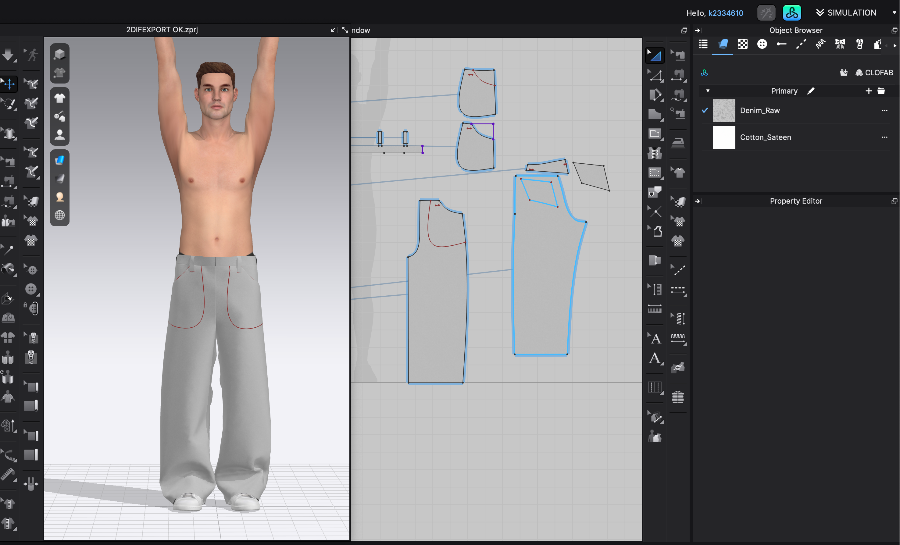

PANTS — GARMENT
A study of form, fit, and construction. Developed through pattern work and iteration, focusing on proportion, silhouette, and material behavior.
PATTERN DESIGN
GARMENT CONSTRUCTION
CLO3D
